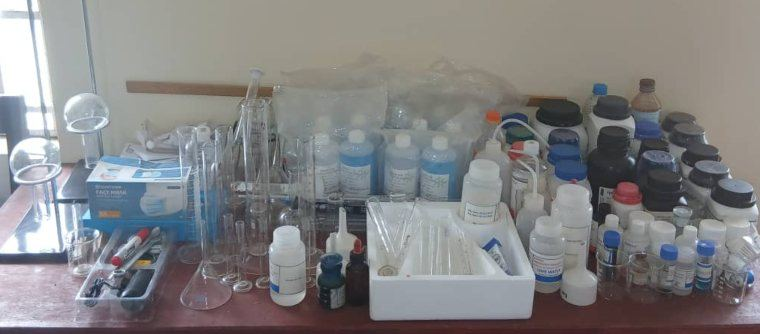
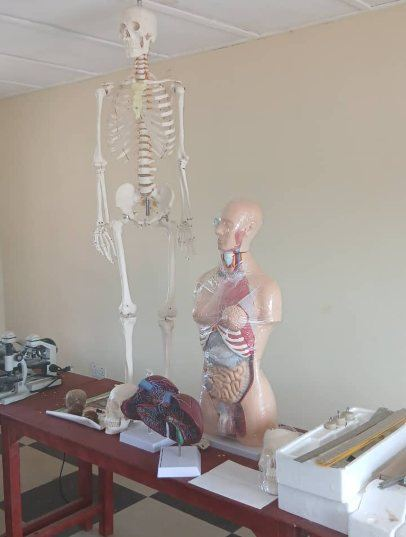

Academic Departments
Three departments, Science, Art and Commercial, each led by a Head of Department, guide students from Junior Secondary foundations to Senior Secondary success.
Choose a department to explore
In Junior Secondary School every student studies a broad range of subjects. In S.S.S 1, each student joins the department that best fits their strengths and ambitions.
Science Department
The Science Department builds scientific knowledge, careful observation and problem-solving through lessons, experiments and practical work in our laboratories.
Senior Secondary subjects
Foundation in earlier levels
What students learn to do
- Ask questions and test ideas carefully
- Carry out laboratory work safely
- Link what is learnt to everyday life
- Prepare for science-related further study
Where it can lead


Art Department
The Art Department develops clear thinking, strong communication, cultural awareness and creativity through the study of language, people and society.
Senior Secondary subjects
Foundation in earlier levels
What students learn to do
- Read widely and write clearly
- Speak with confidence
- Understand history, government and society
- Respect culture and different points of view
Where it can lead


Commercial Department
The Commercial Department prepares students for the world of business, money and organisation through the study of accounts, trade and management.
Senior Secondary subjects
Foundation in earlier levels
What students learn to do
- Keep simple records and accounts
- Understand how trade and money work
- Plan and manage tasks honestly
- Use the computer room for practical lessons
Where it can lead

Core subjects, shared by every department
All Senior Secondary students study these General Core subjects.
English Language
Reading, writing and speaking with accuracy and confidence.
Mathematics
Number, reasoning and problem-solving for every pathway.
Computer Studies
Basic computer skills for school work and everyday life.
Civic Education
Responsible citizenship and respect for others.
Who leads each department
The H.O.D Science, H.O.D Art and H.O.D Commercial plan the curriculum, support subject teachers, guide students and keep standards high, working with Form-masters and school management.
What supports our departments




What parents value
Experienced teachers
Qualified teachers led by a Head of Department.
Practical lessons
Laboratory and computer lessons alongside the classroom.
Guidance
Help in choosing a department and planning further study.
Exam preparation
Steady preparation for the WASSCE.
Find the right department for your child
Three departments, one shared commitment to learning and good character.